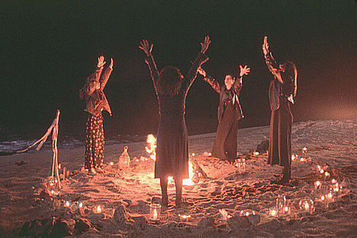
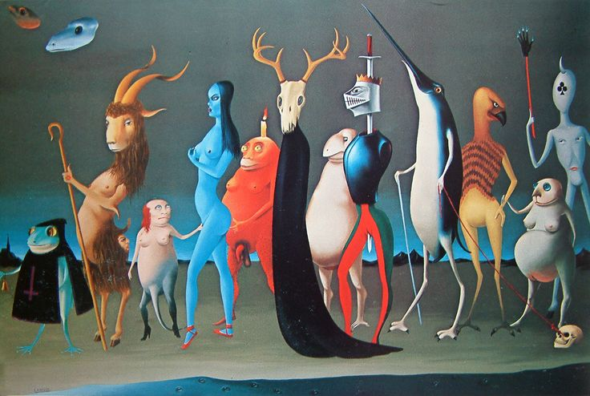
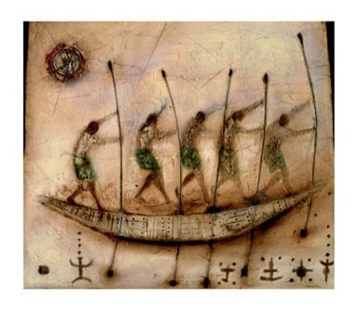

Un ritual es una invitación periódica por un grupo o sociedad para reunirse en torno a un evento de naturaleza espiritual o psicológica.
Ritual es sinónimo de rito, que proviene del latín ritus, o un conjunto de ritos, de prácticas o de acciones establecidas que forman parte
Los rituales puede ser para celebrar el comienzo de un año nuevo, el nacimiento de algún dios,
la muerte o un día de perdón.
Los rituales se caracterizan por tener una música o un baile especial, discursos o palabras más formales, comida especial
o ropa especial que se debe usar.
Los rituales son asociados a los paganos ya que los cristianos usan la palabra rito o sacramento
para diferenciarse de aquellos que no están bautizados ni pertenecen a la iglesia.
Algunos rituales incluso se van adaptando o
modificando con el paso del tiempo mimetizándose con la religión que predomine en la región.
Es por ello, que ritual se usa hoy en día en el ámbito deportivo o por una ideología política, etc.,
incluso por los recuerdos o la memoria
histórica de una comunidad, como una boda, un entierro, un cumpleaños, y otros días festivos.
En sentido figurado, un ritual es algo
que se realiza de manera habitual por su valor simbólico, como una rutina pero se hace de un modo especial, con una forma en particular
de hacerlo.
Un rito no es una acción cotidiana y rutinaria, si no algo que tiene más valor. A veces se entiende ritual al contrario, como algo
que se realiza sin una razón o un propósito aparente.
 
Los ritos se componen de una serie de reglas específicas que se aplican a la conducta conducta de manera tal que prescriben el modo en que el hombre debe comportarse frente a los objetos sagrados. Cada rito, esta compuesto así de un conjunto de ceremonias, esto es, actos concretos o las fases en que éste puede dividirse. Los objetos relacionados con los ritos se consideran sagrados y pueden ser palabras, instrumentos, cosas o personas que pierden su dimensión profana para aquirir naturaleza sagrada.
Palabras sagradas
De esta forma, las palabras que se pronuncian a través de un ritual no son mundanas sino "divinas" por lo que incluso pueden pronunciarse en una lengua diferente o incluso deformada respecto al lenguaje habitual para resaltar la dimensión sobrenatural.
El poder ritual de los objetos materiales que se usan en determinados contextos sagrados, se ha explicado en función de su utilidad o escaces. Ritualizar objetos últiles podría ser además una forma de resaltar su importancia, y en el caso de los escasos, realzar su diferenciación. En cualquier caso, siempre poseen un sentido final que representa una una explicación profunda de por qué éstos han sido como objetos sagrados y no otros.
La utilización de un objeto como simbolo resulta particularmente adecuad para fijar y organizar en el plano de lo concreto, concpetos abstractos que son parte de la trama del pensamiento humano y que, en este sentido, serían la primera parte en la formulación de un mito, y luego, los sistemas religiosos.

ritos de pasaje |
Fueron estudiados por Vab Genep y son aquellos
que acompañan a las personas en sus cambios de posición social. De esta manera, se sacraliza la modificación de roles y status. Sin embargo, la sacralización no es el único objetivo sino que también estos ritos pueden tener la misión de propiciar buenos augurios para el futuro. |
ritos cìclicos |
Al ser anuales, señalan
el paso de un período a otro y tiene que ver con la renovación
de la naturaleza y las estaciones. Las fiestas relacionadas con equinoccios y solsticios como Pascua y Navidad son buenos ejemplos. |
ritos de inversiòn |
A veces, los ritos cíclicos suponen un evento ritual en el cual se invierten los roles sociales. Por ejemplo: ser reina por un día o los bailes de carnaval que propician el descontrol y la promiscuidad sexual. |
ritos de confirmacion |
A través de ellos se crean situaciones de alta emotividad que buscan concientizar al individuo respecto de su dependencia del resto de la sociedad. Estos ritos suelen exaltar principios morales correspondientes a nuevos estados y las obligaciones involucradas. |
ritos expiatorios |
Se refieren al bienestar físico y moral del individuo, partiendo de que la base de universo es un orden moral en el que la suerte o la desgracia dependen de la conducta moral del hombre. Estos ritos tienen así el objetivo de reparar el mal. |
ritos de propiciaciòn |
En caso de alteraciones a la normalidad como guerras, enfermedades u otras desgracias, estos ritos buscan retornar a la integridad moral del hombre de manera tal que los factores externos que afectan negativamente se alejen y todo vuelva a su cauce. |
{kind=link}
{kind=link}
{kind=link}
{kind=link}
{kind=link}
{kind=link}
{kind=link}
{kind=link}
{kind=link}